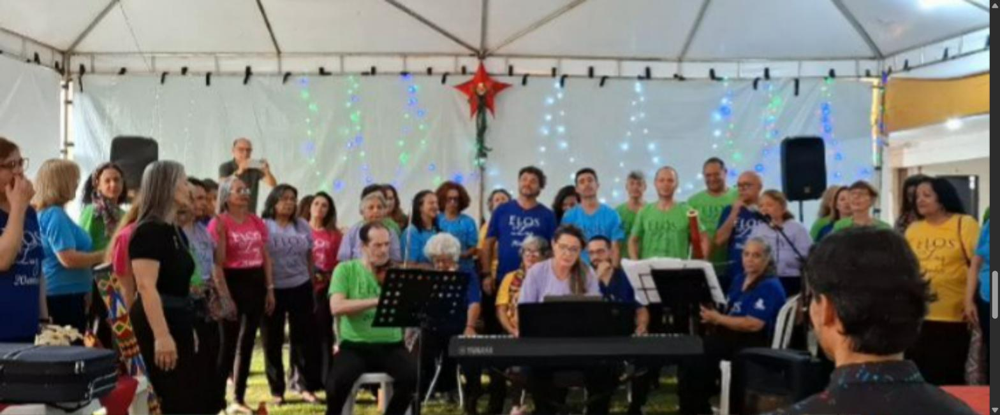
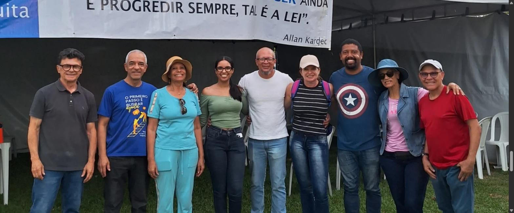

Estudo
Reuniões públicas, evangelização infantil, mocidade e a Escola de Estudos Espíritas. A doutrina lida com calma, sem pressa e sem fanatismo.

Desde 1986, em Taguatinga, a Sociedade de Divulgação Espírita Auta de Souza estuda o Evangelho, ampara quem chega e transforma consolo em trabalho. Aqui a caridade não é um evento: é a rotina da semana.
Somos um centro espírita: casa de estudo, de prece e de trabalho. E somos, por consequência, uma obra social — porque o que se aprende aqui dentro precisa de alguém do lado de fora para fazer sentido.
Reuniões públicas, evangelização infantil, mocidade e a Escola de Estudos Espíritas. A doutrina lida com calma, sem pressa e sem fanatismo.
Triagem, tratamento espiritual, passe e atendimento fraterno. Quem chega é ouvido antes de ser encaminhado — e é encaminhado antes de ir embora.
Cestas básicas, enxovais, bazar, acolhimento institucional e educação. A obra social é o braço prático da mesma casa.



Nasceu em Macaíba, no Rio Grande do Norte. Perdeu a mãe antes dos três anos e o pai aos cinco. Aos dez, viu o irmão morrer queimado. Aos catorze, adoeceu de tuberculose. Doente, continuou ensinando religião às crianças. Morreu aos vinte e quatro.
Publicou em vida um único livro: Horto, de 1900 — um jardim cultivado —, prefaciado por Olavo Bilac. Francisco Palma a chamou de cotovia mística das rimas. Câmara Cascudo, de a maior poeta mística do Brasil.
Esta casa não escolheu o nome por acaso. Escolheu uma vida que respondeu à dor com trabalho, e não com queixa.
Meu Deus! como é bonito um coração
que sabe amar, sofrendo e perdoando…
Além da semana regular, a casa mantém um calendário próprio de encontros, cursos e campanhas — quase todos gratuitos e abertos a quem quiser chegar.
O maior encontro do ano, em duas edições. A 8ª tratou de “Além da tela”; a 9ª, de “Luzes que não se apagam”; a 11ª chega com A arte de superar as dificuldades e a alegria de servir. Palestras presenciais e online, noite após noite.
Turmas novas a cada semestre. Presencial, gratuito e aberto ao público — não é preciso ser espírita, nem ter lido nada antes. Ambiente acolhedor, e pergunta difícil é bem-vinda.
Já na segunda edição. Cantata do Coral Elos de Luz, feirão de livros espíritas, bazar natalino e cantinho do café — tudo gratuito, no pátio da casa.
Já na 14ª edição, em prol das Obras Sociais da Sociedade. É uma das pernas que sustentam as cestas, os enxovais e o Lar Maria de Nazaré durante o ano inteiro.
Dois dias de convivência e formação com trabalhadores de outras casas. Confraternização antes de ser congresso.
A casa edita, vende e empresta livro espírita — e recebe cada novo estudante da Escola de Estudos Espíritas pelo programa de boas-vindas Altas Luzes.
Frentes permanentes, mantidas por voluntários e por doações de pessoas que nunca pediram o nome em placa nenhuma.
Acolhimento 24 horas para gestantes e mães com seus bebês em situação de violência e vulnerabilidade, encaminhadas pela rede socioassistencial. Um serviço de prontidão: a vaga que está livre não é vaga ociosa, é vaga pronta.
Contraturno para crianças e adolescentes na segunda sede: reforço de Português e Matemática, leitura, arte, esporte e acompanhamento das famílias.
Cerca de trezentas cestas por mês para famílias cadastradas, além do enxoval entregue a gestantes e recém-nascidos acompanhados pela casa.
Atendimento fraterno, orientação, roupas e utensílios a preço simbólico. O bazar não é comércio: é o que financia parte do que a casa distribui de graça.
Deixai vir a mim os pequeninos.Lema da casa, desde 1986
Um quilo de alimento, uma tarde de sábado, um enxoval, uma doação mensal. Tudo o que chega é convertido em atendimento — e prestado em conta.